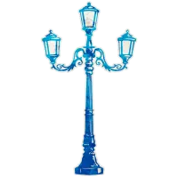
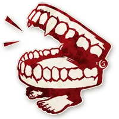

You start knowing 1 in-play Townsfolk. If you were mad that you were this character, you gain their ability when they die.
pixie
You start knowing if your closest evil player is clockwise or anti-clockwise. If equidistant, this info is arbitrary.
shugenja
You start knowing 1 in-play Townsfolk. If you were mad that you were this character, you gain their ability when they die.
pixie
Each night, choose a player: a Minion, if chosen, learns this. All chosen Minions have no ability.
preacher
Each night, choose a player: you learn their alignment. [+0 to +2 Village Idiots. 1 of the extras is drunk]
villageidiot
Each night, if the dead equal or outnumber the living, you learn 1 alive character. The Demon knows who you are.
king
Once per game, at night, choose a player: they learn who you are.
nightwatchman
You have a not-in-play Minion ability.
alchemist
You do not know what your ability is. Each day, privately guess what it is: you learn how accurate you are.
amnesiac
If you die at night, an alive good player becomes a Farmer.
farmer
If the Demon kills the King, you learn which player is the Demon. [+the King]
choirboy
Minions & Demons do not know each other. If you die, they learn who each other are that night.
poppygrower
On your 1st night, choose a player (not yourself): you become their alignment (you don't know which) even if drunk or poisoned.
ogre
Whoever wins, loses & whoever loses, wins, even if you are dead.
heretic
You start knowing a secret word. The 1st good player to say this word becomes evil that night.
mezepheles
Each night, choose a player: if you nominate & execute them, their team loses. All players know if you choose a new player.
fearmonger
Each day, before nominations, you may publicly choose a player: they die. If executed, you only die if you lose roshambo.
psychopath
If you publicly claim to be the Goblin when nominated & are executed that day, your team wins.
goblin
You start knowing a secret phrase. For each time you said it publicly today, a player might die.
yaggababble
Each night*, choose 3 players (all players learn who): each silently chooses to live or die, but if all live, all die.
alhadikhia